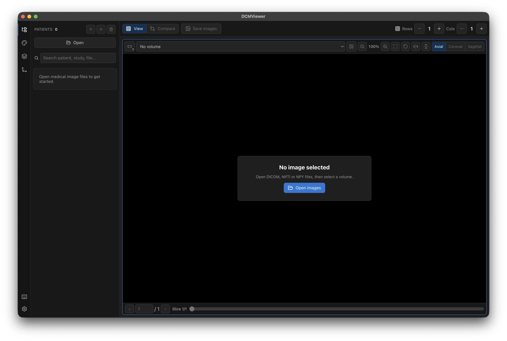
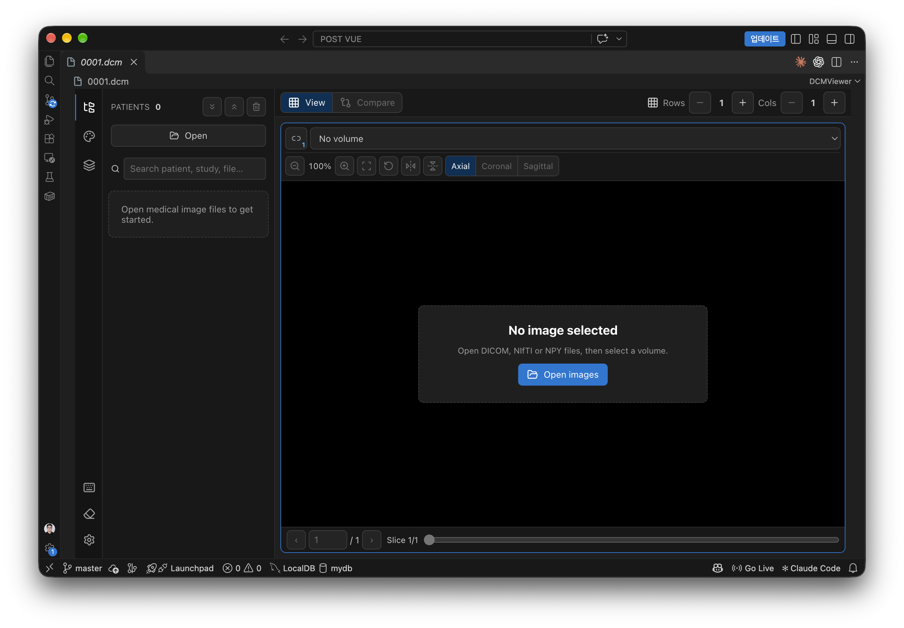
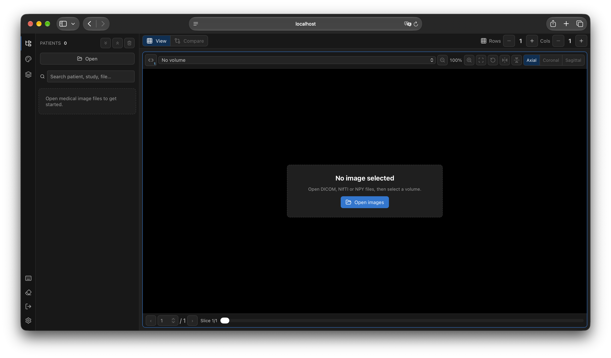

NPZ 지원과 이미지 저장
NPZ 배열별 볼륨 열기, 뷰·그리드 PNG 저장, 정합 결과 .npy 저장.
Read-only medical image viewer
DICOM 시리즈, NIfTI, NumPy 볼륨을 슬라이스 단위로 탐색하고 여러 영상을 나란히 비교합니다. 데스크톱, VS Code, 웹이 같은 렌더러를 씁니다.
Desktop · VS Code Extension · Web Platform
원격 작업 공간과 웹 플랫폼은 서버에서 볼륨을 해석하고 필요한 단면만 전송합니다.
Case 1, Case 2, 차이 영상을 한 화면에. 정합까지 앱 안에서 끝냅니다.
Electron, VS Code 웹뷰, 브라우저가 동일한 React 렌더러를 공유합니다.

Features
원본을 건드리지 않는 읽기 전용 뷰어. 보는 일에만 집중합니다.
ConvexAdam · ANTs · elastix, 진행률과 ETA
Fill / Outline, 클래스 검색·단일 표시
Brain, Lung, Bone, Liver 등 8종
컬러바, 색상 반전, 값 범위 조절
Axial / Coronal / Sagittal, 복셀 값 확인
뷰별 PNG 또는 그리드 한 장
환자·Study 트리, DICOM 태그 검색
Dark / Light / System, 강조 색상
Formats
폴더를 고르면 하위 폴더까지 찾아 DICOM 시리즈를 구성합니다. 다채널 NPY와 NPZ 배열은 볼륨별로 나눠 엽니다.
.dcmDICOM.dicomDICOM.niiNIfTI.nii.gzNIfTI 압축.npyNumPy.npzNumPy 아카이브Platforms
Electron 기반. 영상 정합과 GitHub 릴리즈 업데이트 확인을 지원합니다.
$ npm ci $ npm run dev

의료 영상 파일을 클릭하면 편집기 안에서 열립니다. SSH·컨테이너 작업 공간에서는 필요한 단면만 전송하고 캐시합니다.
$ npm ci $ npm ci --prefix vscode-extension $ npm run package:vscode

서버의 CT 볼륨을 브라우저에서. 계정, 가입 승인, 관리 페이지를 갖춘 다중 사용자 플랫폼입니다.
$ docker compose up -d --build # http://<서버 IP>:8080
Changelog
NPZ 배열별 볼륨 열기, 뷰·그리드 PNG 저장, 정합 결과 .npy 저장.
ConvexAdam, ANTs, elastix 정합과 Python 패키지 자동 설치.
웹에서 내 컴퓨터 파일 열기, 업로드, Docker 실행 지원.